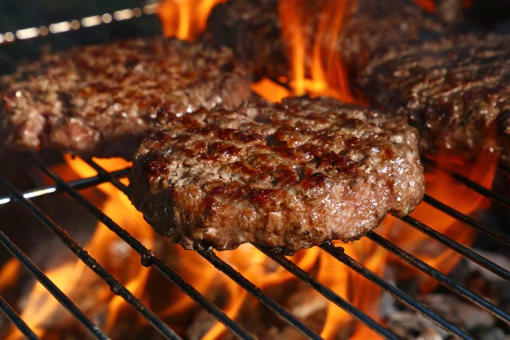

Classic Grilled Burgers

This recipe will be for fresh, made from scratch, grilled burgers.
Ingredients
- 2 pounds lean ground beef
- ½ pound bulk Italian sausage
- ½ large red onion, chopped
- 2 Anaheim chile peppers, chopped
- 3 cloves garlic, minced
- ¾ pound Muenster cheese, shredded
- 1 egg
- 1 tablespoon Worcestershire sauce
Directions
- Preheat an outdoor grill for medium-high heat, and lightly oil the grate.
- Mix the ground beef, sausage, onion, chile pepper, garlic, Muenster cheese, egg, Worcestershire sauce, and chili powder in a mixing bowl until evenly combined. Season to taste with salt and pepper and mix again. Form the meat mixture into 8 patties.
- Cook on the preheated grill until the burgers are no longer pink in the center, about 7 minutes per side. An instant-read thermometer inserted into the center should read 160 degrees F (70 degrees C).